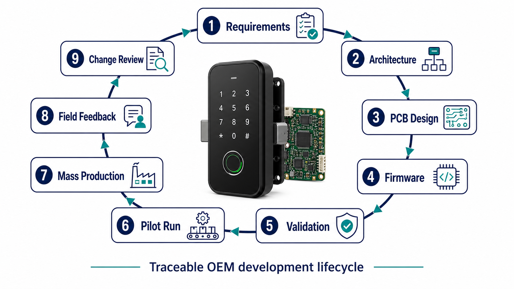
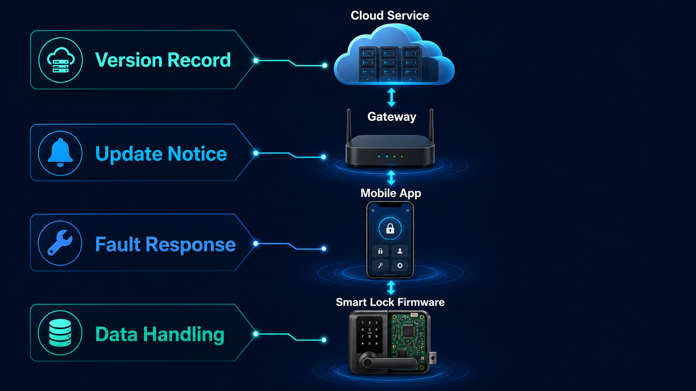
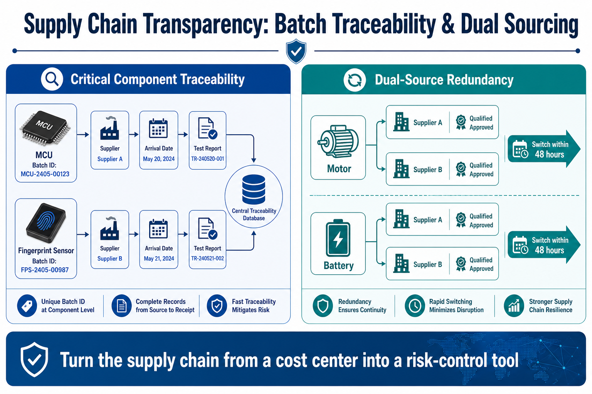

Este artigo descreve pontos de controlo técnicos e comerciais para projetos OEM. Não substitui a especificação contratual, os requisitos legais do mercado ou os ensaios específicos do projeto.
Uma amostra de fechadura inteligente pode provar que uma ideia funciona. Não prova, por si só, que cada unidade de produção terá a mesma estrutura, software, acabamento, compatibilidade e desempenho. A aprovação de amostras deve transformar uma unidade física numa referência documentada e permitir que qualquer alteração seja avaliada antes de chegar à linha ou ao mercado.

1. A amostra é uma referência, não uma descrição vaga
Defina o propósito da amostra: avaliação de aparência, instalação, função de acesso, integração de aplicação, compatibilidade de porta, pré-conformidade ou aprovação de produção. Cada finalidade pede uma evidência diferente. Identifique a unidade com um número de amostra, data, mercado, configuração e desvios conhecidos. Fotos ajudam, mas não substituem desenho, BOM e versão de firmware.
| Elemento | O que deve ficar identificado |
|---|---|
| Produto mecânico | Modelo, corpo de fechadura, direção de abertura, dimensões, acabamento, maçaneta, cilindro e acessórios. |
| Eletrónica | Versão de PCB, módulos de comunicação e biometria, conetores e método de alimentação. |
| Software | Versão de firmware, aplicação/gateway compatível, parâmetros de rádio e método de atualização. |
| Embalagem | Referência de caixa, acessórios, manual, etiqueta, idioma e requisitos do mercado. |
2. Congele documentos e versões antes do lote
A amostra aprovada deve apontar para uma lista controlada de documentos: especificação, desenho, BOM, firmware, plano de testes, lista de embalagem e aprovação de arte final. A equipa de compras não deve aceitar a expressão “igual à amostra” sem saber qual versão de cada elemento está incluída.
Para projetos conectados, mantenha também a fronteira entre firmware, aplicação, gateway e cloud. O guia de suporte pós-venda OEM explica por que versões rastreáveis simplificam atualizações e RMA depois do lançamento.

3. Planeie validação com condições semelhantes às do projeto
O plano de validação deve indicar portas e materiais representativos, frequência de uso, alimentação, ambiente, comunicação, métodos de acesso e critérios de aceitação. Registe não apenas “passou/falhou”, mas também condições e limitações. Uma amostra de mesa não valida a carga de uma porta desalinhada ou o comportamento de uma bateria em clima frio.
- Instalação: confirme furação, espessura, eixo, alinhamento e processo de montagem.
- Função: teste credenciais, fecho, abertura de emergência, alertas e eventos esperados.
- Conectividade: defina gateway, alcance, fluxo offline e critérios de recuperação.
- Qualidade: combine amostragem, inspeção visual, testes de fim de linha e retenção de registos.
4. Trate qualquer alteração como uma decisão controlada
Escassez de componentes, melhoria de processo ou adaptação a outro mercado podem exigir alterações. Antes de aplicar uma alteração, registe a razão, os itens afetados, a avaliação de compatibilidade, o plano de teste, as unidades/lotes envolvidos e a aprovação do comprador. Uma substituição aparentemente equivalente pode alterar consumo, desempenho de rádio, instalação ou disponibilidade de assistência.
| Etapa de alteração | Evidência recomendada |
|---|---|
| Pedido | Motivo, descrição, versão atual e versão proposta. |
| Avaliação | Impacto em função, certificação, ferramentas, software, embalagem e peças. |
| Validação | Amostra, ensaios, resultados e compatibilidade com instalações existentes. |
| Libertação | Aprovação documentada, data de vigência, lote de transição e comunicação. |
| Rastreabilidade | Relação entre número de série, lote, PCB, firmware e alteração aplicada. |
5. Transfira a referência para produção e campo
Antes do primeiro lote, reveja a amostra aprovada com produção, qualidade, compras e assistência. Confirme que os testes de linha detetam as características críticas e que as etiquetas permitem ligar cada unidade à configuração aprovada. O checklist de instalação e aceitação fecha o ciclo no local do projeto; o controlo de versões torna os resultados de campo acionáveis.

6. Perguntas para a sua RFQ e revisão de amostras
Referência de produto 5 perguntas
- Que configuração exata representa a amostra aprovada?
- Que desenhos, BOM e versões de firmware acompanham a aprovação?
- Que acessórios, manuais e etiquetas fazem parte da referência?
- Que condições de porta e ambiente foram testadas?
- Que desvios ainda estão abertos e quem os aprova?
Alterações e produção 5 perguntas
- Que alterações exigem notificação e aprovação do comprador?
- Como são avaliados componentes alternativos e novas versões?
- Como será comunicada a data e o lote de transição?
- Que testes e registos de linha comprovam a conformidade?
- Como os números de série se ligam a PCB, firmware e lote?
Transforme a amostra numa referência utilizável em produção
Partilhe o seu modelo de fechadura, mercado, metas de volume e requisitos de integração. A WAFU pode preparar uma matriz de aprovação de amostras e alterações para a sua consulta OEM.
Pedir matriz de aprovação OEM